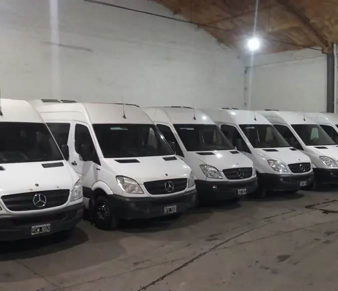
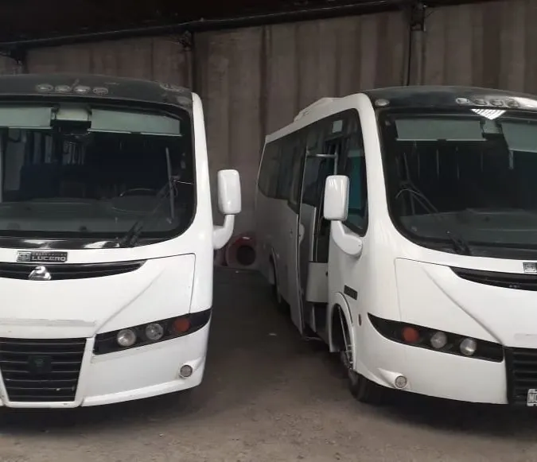

Depósito y galpón
Depósito y galpón en Salta, con playa de maniobras y cámara de frío.
Galpón propio en Salta Capital, de unos 3.000 m², con acceso para camión y taller en el mismo predio. Almacenaje por período, consolidación y cross-dock, posiciones frías a demanda y base operativa. Cotizamos en el día.
Unos 3.000 m² en Salta Capital, con acceso para camión.
Entrada, giro y carga y descarga de camiones dentro del predio.
Posiciones frías disponibles a demanda, con contrato.
Lausof S.R.L. — CUIT 30-71146774-9. Trabajamos con empresas.
El depósito
Galpón propio en Salta Capital
Nuestro depósito es un galpón propio de unos 3.000 m² en Salta Capital, con playa de maniobras y acceso para camión: la carga entra, se mueve y sale sin depender de la calle. En el mismo predio funciona nuestro taller, así que el lugar trabaja todos los días, con personal propio para recibir y despachar.
Hace años que empresas de la región nos confían su mercadería, desde proveedores del sector minero hasta empresas de catering. Guardamos, consolidamos y despachamos según cómo trabaja cada operación.


Qué se puede hacer
Almacenaje, consolidación y cross-dock en Salta
El depósito se usa entero o por partes: contanos qué necesita tu operación y armamos el esquema.
Guarda de mercadería, insumos o equipos por semanas o meses, con contrato.
Recibimos cargas de distintos orígenes y las dejamos listas para despachar juntas.
Tu carga llega al galpón y sale en nuestra flota: reparto en Salta o traslado a la Puna.
Playa para las unidades y taller propio en el mismo predio.
La diferencia con alquilar un galpón vacío es que acá hay una empresa de transporte atrás: lo que entra al depósito puede salir en nuestros camiones hacia Salta, el Valle o la Puna, sin coordinar con un tercero. Y para mover pallets y cargas pesadas, acá o en tu obra, también alquilamos autoelevadores →
Frío
Posiciones frías disponibles a demanda
Dentro del depósito tenemos cámara frigorífica propia. Las posiciones frías se habilitan a demanda, con contrato: contanos qué mercadería es, cuánto volumen y por cuánto tiempo, y te armamos la propuesta. Mínimos y plazos a convenir.
¿Necesitás también el transporte con frío? Hacemos cargas refrigeradas en Salta y el NOA, con cadena de frío de origen a destino, así el mismo proveedor te resuelve la guarda y el viaje.
Preguntas frecuentes
Lo que nos preguntan antes de cotizar
¿Se puede alquilar espacio por período?
Sí. El espacio se contrata por el período que necesites, semanas o meses, con contrato. Contanos qué vas a guardar y cuánto lugar te hace falta y te pasamos la propuesta.
¿Reciben y consolidan mercadería?
Sí. Recibimos tu carga con playa de maniobras y personal propio, la guardamos o la consolidamos con otras, y la despachamos — incluso en nuestra propia flota, hacia Salta o la Puna.
¿Emiten factura?
Sí. Somos Lausof S.R.L., CUIT 30-71146774-9, y emitimos factura A. Hablás siempre con el mismo responsable, desde la cotización en adelante.
¿Buscás depósito o una base en Salta?
Contanos qué necesitás guardar o mover y por cuánto tiempo. Te respondemos con la propuesta en el día.
Escribinos por WhatsApp